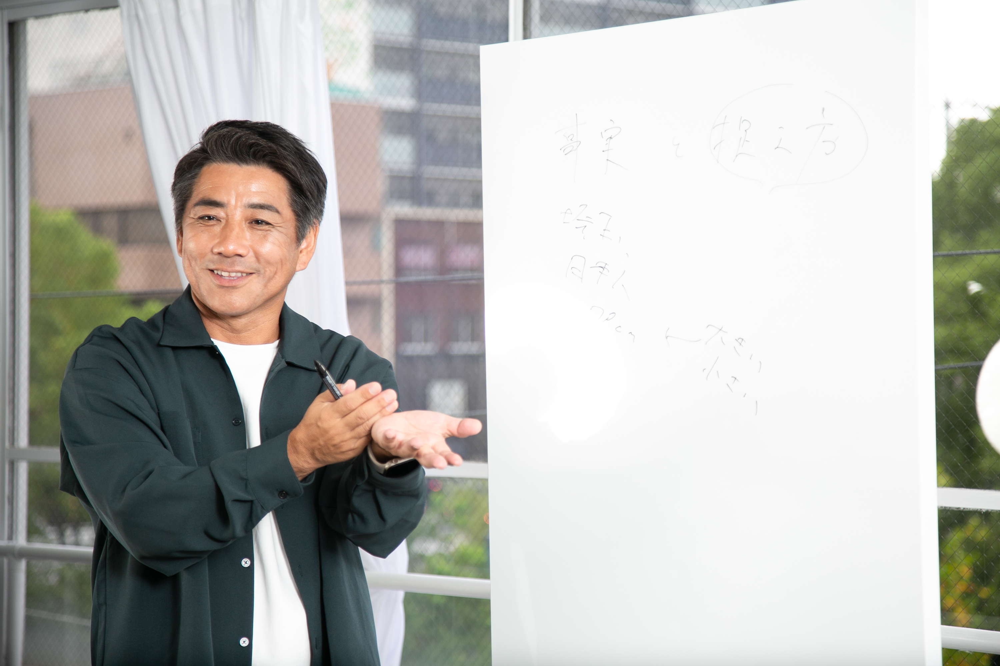
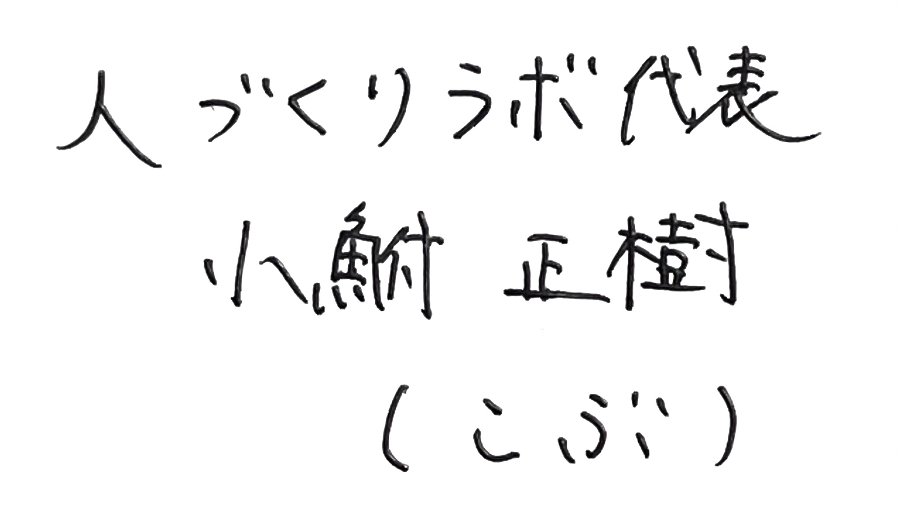
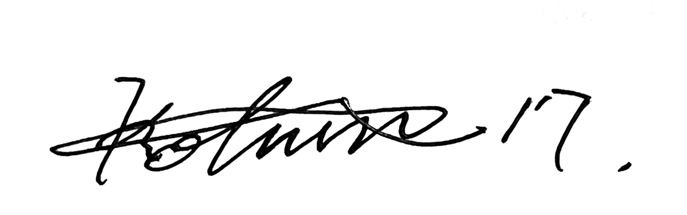

根性論や指示命令の時代は終わりました。
30年・3,000人の現場経験と脳科学・心理学で、
選手が主体的に動き出すチームをつくる。
情熱はある。でも、なぜかうまくいかない。
そのモヤモヤ、一緒に解決しましょう。
6ヶ月講座を支える、3つの柱
「教える」から「気づく」へ。思考の土台を作る。単なる「立ち位置」の指示ではありません。選手が「なぜそこに立つのか」という原理原則を理解し、ピッチ上で自らの脳で判断するための「認知力」を育てます。
指導者自身が「失敗は成長の種」と確信し、選手のチャレンジを奪わない「我慢力」を身につけます。脳科学に基づいた「魔法の声かけ」を実践することで、選手の主体性を爆発させ、自ら成長し続ける組織文化を構築します。
世界基準の考え方をベースに、目の前の子どもたちのレベルに合った「戦い方の指針（ゲームモデル）」を作ります。コーチがいなくても選手同士で問題を解決できる組織を作ることで、育成を妥協せず、「勝手に勝てるチーム」へと進化させます。
まずは1dayセミナーで、その「答え」を体感してください。
脳科学・心理学に基づいた30年の現場経験から生まれた独自メソッドで、一人ひとりに合った指導スタイルと指導力アップ方法をお伝えします。
「チームの勝利＝コーチの成長」を主軸に、6ヶ月間で育成と勝利を両立できる指導者を目指します。
こんな方におすすめ：
「理論」×「現場」×「結果」の3つが揃っているから、強いのです。
スペインやJクラブアカデミーの最先端の指導法をベースに、脳科学・心理学に基づいた再現性の高いカリキュラムを提供します。単なる「個人の経験談」ではなく、どんなチーム、どんなカテゴリーにも応用可能な「原理原則」を学べます。
どれだけ素晴らしい理論でも、日本の町クラブや少年団のピッチで使えなければ意味がありません。30年以上現場に立ち続けたこぶさんだからこそ、「日本のリアルな現場」で本当に効果のある関わり方・動かし方を、泥臭く分かりやすくお伝えできます。
技術的に劣る選手たちが集団として変革していく核心、「選手の自立を引き出すアプローチ」と「脳の特性に合わせた言葉選び」を直接伝授します。「教え込む指導」から卒業し、選手が勝手に動き出す指導をあなたのものにできます。
同じ悩みを抱えていた指導者たちの変化をご覧ください。
セミナーを受けて、選手には一人ひとり異なるタイプがあることを改めて実感しました。これまでは同じ声かけを全員にしていましたが、タイプ別のアプローチを意識するだけで選手のモチベーションが上がるきっかけになると確信しています。
今回学んだ内容を実践すれば、指導レベルが上がり、選手との関係性が確実に良くなると感じました。次はポジショニングとゲームモデルについても深く学んでいきたいです。
講座を受ける前は、毎回同じ指示を繰り返すだけでした。でも6ヶ月間学んで、選手が自分で考えて動き出す瞬間が増えてきました。指導が楽しくなりました。


まずは1dayセミナーから。
公式LINEに登録して、先行案内を受け取ってください。
登録無料・いつでも解除できます。